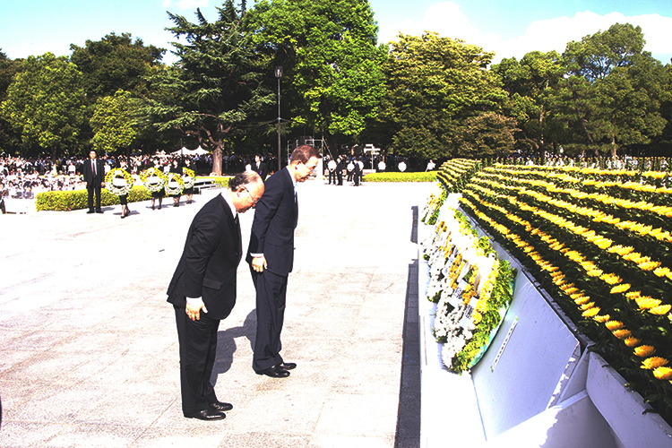

Nuclear arms are the most dangerous weapons on Earth - just one is capable of inflicting catastrophic harm to people and the environment. Despite an array of international agreements aimed at reducing nuclear arsenals, the world's 22,000 existing nuclear weapons continue to pose a threat to peace and security. Secretary-General Ban Ki-moon, who has placed nuclear disarmament and non-proliferation high on the UN agenda, has warned that bold steps toward a nuclear-weapons-free world have stalled, leading to mounting tensions between States and a return to Cold War mentalities.
Pictured In 2010, at the annual Peace Memorial ceremony in Hiroshima, Japan, the Secretary-General (right) and Director General Yukiya Amano of the International Atomic Energy Agency (IAEA) pay their respects to the victims of the 1945 nuclear attack on that city. UN Photo/Eskinder Debebe
